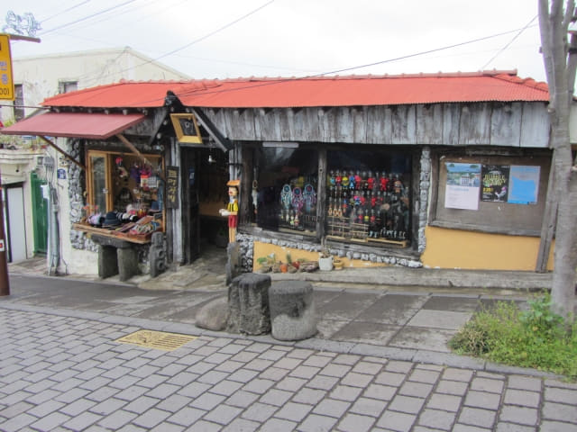
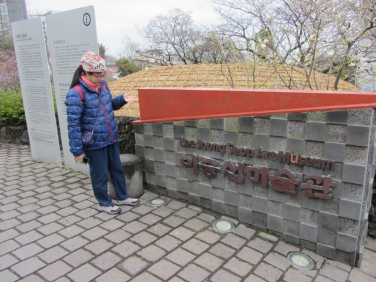

西歸浦每日偶來市場並不是很大, 約半小時便逛完, 循原路離開, 走過馬路已經是李仲燮路 (이중섭로 Leejungseop Road)的入口。接著沿李仲燮路往下走, 這裡也是偶來6號小路的其中一段。
李仲燮路
李仲燮路是韓國第一條以畫家名字命名的街道。李仲燮是一名藝術家, 也有人稱他為難民畫家, 在韓戰期限逃難來到西歸浦, 但卻是他顛沛流離的一生中最為安穩的一段日子, 因而創作出很多傑出的作品。
為了紀念李仲燮先生, 西歸浦市將其故居修復原貌, 並開闢為李仲燮公園, 將他每天早晚散步的家門前小路命名為「李仲燮路」, 更設立李仲燮美術館, 介紹其生平及展出作品。
沿途有很多工程正在進行中。
李仲燮藝術街
沿李仲燮路(偶來6號小路)向下走了兩個街口, 前面一段街道稱為「李仲燮藝術街」或「李仲燮文化街」。街道一旁都是一間接連一間的攤檔, 很多旅客都聚集在這裡, 十分熱鬧,

李仲燮藝術街的入口, 有李仲燮的相片及1953年創作的作品「牛」。
今天是星期六, 濟州當地的藝術家都會來到「李仲燮藝術街」的攤檔, 親自展示及出售自己的作品。如果是平日來, 所有攤檔都會空空如也, 十分冷清的。
走過攤檔, 繼續沿陡坡往下走。
緊接是路旁一間接連一間售賣藝術品的店舖。

李仲燮公園 (이중섭공원)
走過李仲燮藝術街, 來到一個 T 字路口, 路旁是一間茅舍, 已經來到李仲燮公園 (이중섭공원)。
